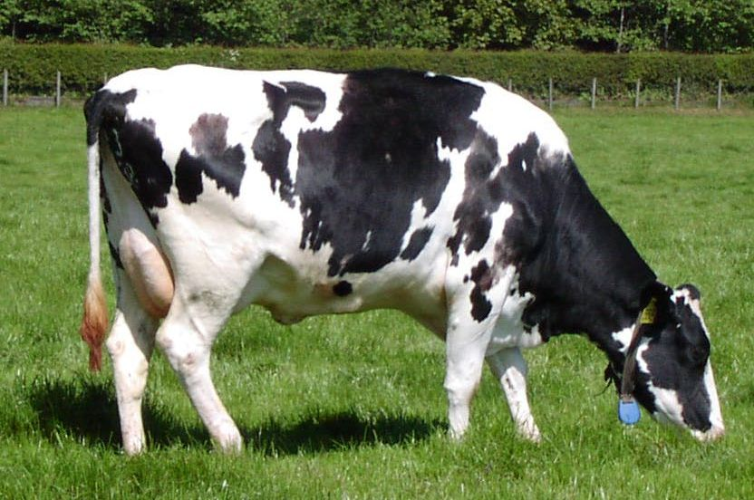

Poultry
Poultry farming involves the breeding and raising of chickens, ducks, and other birds for meat and eggs. To be successful in poultry farming, you will need:
- Chickens or ducks
- Feed and water
- Shelter (such as a chicken coop or duck house)
- Equipment (such as egg incubators and brooders)
Dairy
Animal Feeding
Food is one of the most basic aspects of living beings.Cattle feeding cost a total of 70% of the milk production.
Potential
Besides the raw milk there is a huge market of milk products like powdered milk, ghee, cheese etc.
Dairy farming is one of the most important sectors of animal husbandry in India. It involves the production of milk, cheese, butter, and other dairy products.
Shelters
The cattle shed must have a floor space of 10 feet by 5.5 feet per animal with a 1.5% slope towards the drain
Fisheries
Fisheries involve the cultivation and harvesting of fish and other aquatic animals for food. To be successful in fisheries, you will need:
- Fish ponds or tanks